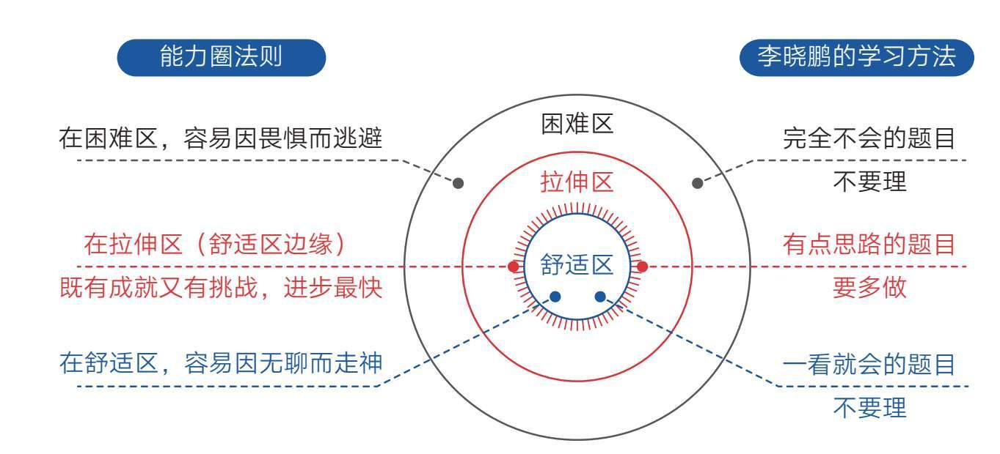
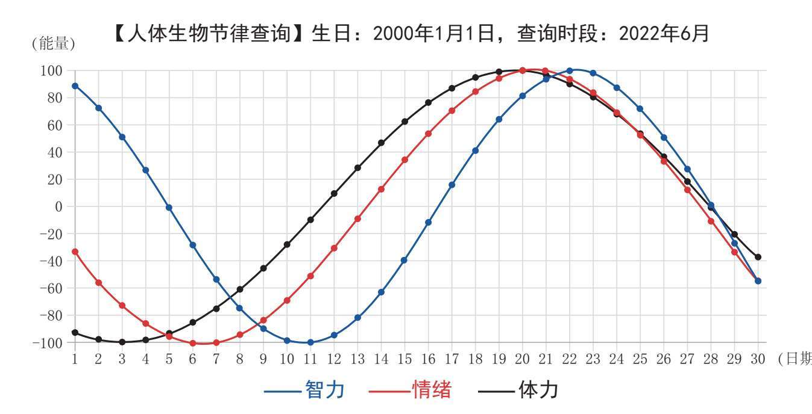
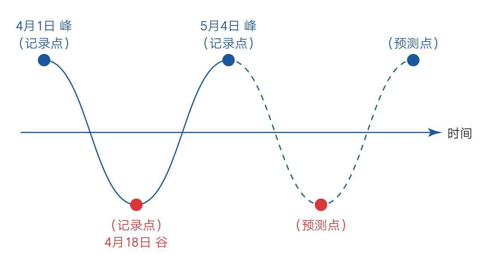
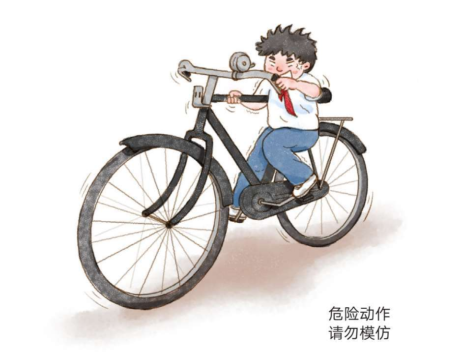
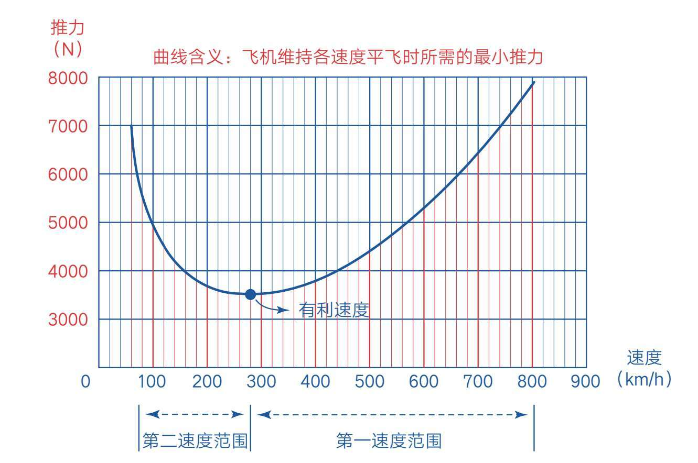
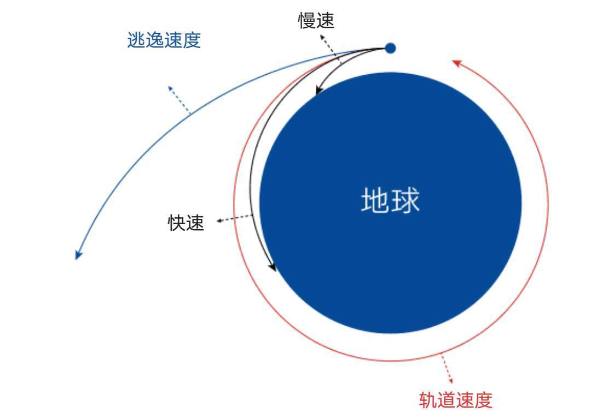
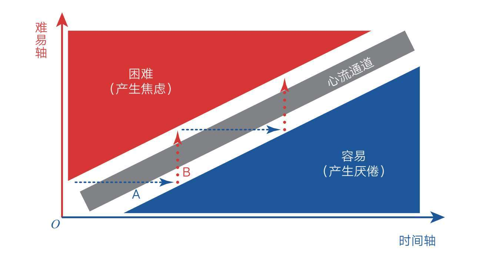
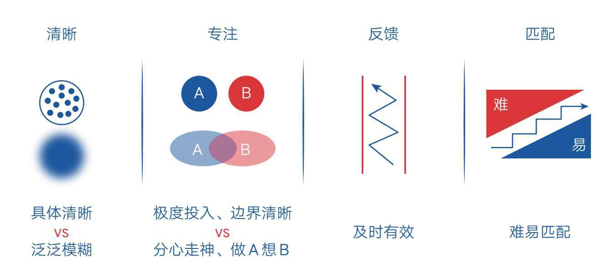
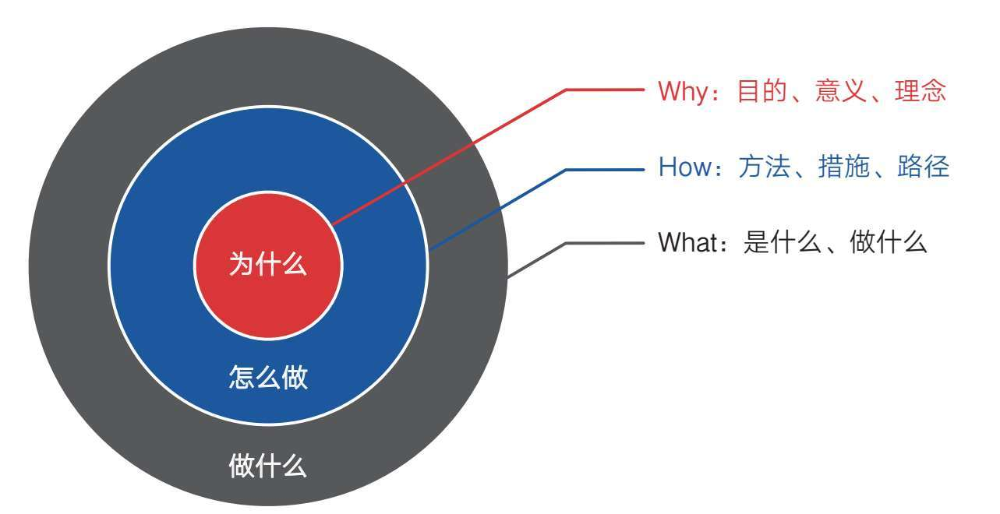

一位著名科学家有这样一件往事。有一次，他回母校，看到校门口挂着一条横幅，上书“书山有路勤为径，学海无涯苦作舟”。他坚持让校方把横幅拿下来，自己重新题了一幅字：“书山有路勤为径，学海无涯乐作舟”。他将“苦”改成了“乐”。
对于这个改动，我极为赞同。因为在学习时，我们不仅需要刻苦的精神，更需要通过科学的方法让自己感受到学习的乐趣，就像第四章所说的：“科学的学习策略是产出作品、获取反馈，驱动本能脑和情绪脑去‘玩玩玩’，而不是一味地努力坚持，让理智脑苦苦地去‘学学学’。”
不过，一定有人认为只有学霸才能做到这一点，自己作为一个普通人，哪有什么机会得到外界的正向反馈呢？其实不然。因为反馈始终是相对的，只要我们把标准和期望值降低一点，低到自己完全可以胜任的程度，就一定能收到反馈，至少这样能让自己体验到成就感。
这听起来像一种自我欺骗和安慰，不过等你读完下面的内容，就一定会明白这其实是一种大智慧。我把这种智慧称为匹配。
匹配的智慧主要体现在难度匹配、强度匹配和速度匹配三个方面。只要掌握了这三种匹配技巧，我们就能在学习上进退自如、攻无不克。
假设你现在的学习成绩一般，心里迫切希望快速提高成绩，有没有什么好办法呢？这个问题同样被学习专家李晓鹏读中学的侄女赵璐问到过，他在《学习高手的三驾马车》一书中的回答非常值得参考。
他只说了3个字：凭感觉。
这答案让赵璐简直不敢相信。对此，他解释道：“不管你现在是什么水平，这一招都管用——就是凭感觉！那些一眼就能看出答案的题目，不用理它；一眼看过去就头痛、不知道在说什么的题目，也不用理它；只有那种大致能看出点思路，但又要动点脑筋的题目，一定要多做。这个就是中间地带，是你能够进步最快的地方。”
不知道这段话有没有让你想起第一章中提到的能力圈法则？它提示我们学习的最佳区域就是舒适区边缘，而李晓鹏这个方法的核心就是关注这个最佳区域（见图5-1）。
他所说的“凭感觉”是一种筛选学习内容的方法，因为如果单纯运用理性，我们通常会向优等生看齐，把眼光放在那些最难的题目上，想着如何追赶他们；如果顺从天性，我们就会在最简单的题目上打转。

图5-1 在舒适区边缘学习进步最快、成就感最强
想想看，我们在学校里是不是经常看到这样的现象：那些成绩不好的同学想要奋起直追，想到的第一件事往往是努力比拼，于是他们也和成绩好的同学一样去做那些比较难的题目，结果人家学得挺轻松，自己却学得很痛苦，双方的差距越拉越大。因为学习同样的内容，成绩好的同学可能刚好在拉伸区，但自己可能在困难区。此时，正确的做法应该是先沉住气，主动降低学习难度。
知道这个原理以后，我们就应该花大量的时间去梳理哪些内容处在自己的拉伸区，即梳理那些“会做但特别容易错或不会做但稍微努力就能懂”的内容，然后在这个区域内努力。事实上，考试就是一种筛选，那些出错的题目往往就在你学习的舒适区边缘，如果能围绕这些错题彻底掌握背后涉及的知识点，我们就可以快速提高学习成绩。可惜的是，很多人只满足于订正，一旦知道正确答案，就会习惯性地停下脚步，这就浪费了绝佳的提高机会。
在写作业的时候，我们也应该采取这样的策略：对于完全会的题目，用最快的速度完成；对于完全不会的题目，不要恋战，应赶紧跳过，尽可能把省出来的时间用在那些对自己来说稍有难度但有可能突破的问题上。不用担心那些完全不会的题目，因为随着能力圈的扩大，原来那些不懂的内容会慢慢从困难区进入拉伸区，只要你持续在舒适区边缘学习，就一定能掌握它们。当然，如果老师也能遵循这个规律，因人而异地布置作业，那自然是最好的。
如果你已经为人父母，那就应该花大量的时间探寻孩子的拉伸区，然后指导他们在舒适区边缘努力，而不是看到孩子成绩不好就一味冲他们发脾气，说别人家的孩子如何如何，对标优等生，给孩子加学习量、加难度，这样做往往会适得其反。
但说实话，主动把学习标准从困难区降到舒适区边缘是需要勇气的，因为在同学们都努力向前而自己却主动后退的时候，我们心里会本能地产生一种不安全感，会担心自己落在队伍后面。这或许是对我们最大的考验，但请你一定坚信，暂时后退是为了更好地前进，因为只要遵循规律，我们必然可以在扩大能力圈的同时收获成就感。
当然，还有一些人喜欢在舒适区内打转。比如，他们喜欢在书上做标记、重复阅读材料或反复做自己已经会的题目等，对于这类习惯，我已经给出了解决办法——测试回想，它会“逼迫”大家走到舒适区边缘去努力。
不过，说了这么久的“在舒适区边缘努力”，那究竟做到何种程度才算在舒适区边缘呢？
这需要结合你的学习现状来把握。如果你今年刚读初一或高一，距离中考或高考还有较长的时间，那么你可以用“8∶2”的比例来把握，即八成是熟悉的，两成是陌生的；八成是容易的，两成是困难的；八成是熟练的，两成是有挑战的。[17]这个程度会让你的学习非常从容。如果你现在距离中考或高考已经比较近了，那就应该适当调整比例，但无论如何不能贸然进入困难区，那会使你进步变慢，还会让你变得焦虑。
关于强度匹配，我觉得用读者“Amy曹”的两段经历来阐述再适合不过了。
第一件事说的是跑步，她说：“之前我要求自己每天跑步1小时，靠意志力，我坚持了蛮长一段时间，但是最后还是中断了。最近我调整了跑步的时间，改为每次30分钟，最好不要少于一周4次。调整以后发现，我可以不用太靠意志力去做这件事，而且会主动想办法坚持，并且跑完后会很放松，不像之前那样连续跑1小时会很累、很难受。我真的能感觉到现在这种‘主动做’和原先那种‘靠意志力做’完全不一样。”
第二件事说的是学英语，她说：“原来每天学习1小时我会烦躁，但现在改为每天学习30分钟，时间一到就不学了。这样，我反而可以坚持每天学，不厌倦。”
最后她总结道：“我以前一直以为多花时间才能学好、才能达到效果，其实那是因为自己急于求成，想要快速见效，这样反而不容易坚持。现在降低了难度和标准，自己的行动力反而能持续增强。”
“Amy曹”最可贵的地方在于主动降低学习的强度，使自己处在最佳承受范围，既保留了学习的成就感，也保证了学习的挑战性。但对大多数人来说，这种做法是反直觉的，因为当我们想要进步、逆袭的时候，通常都会告诉自己要很努力、很拼，会给自己设定一个很高的标准，还会经常给自己“打鸡血”，告诉自己坚持就是胜利。
“Amy曹”一开始就处在困难区。由于想快速看到改变，她制订了远超自身水平的学习、训练计划，结果因体验太痛苦而中途放弃，这非常像我们常见的激励模式。很多缺少经历的年轻人都是这样的，总想同时实现太多、太大的目标，还希望在很短的时间内实现，于是不自觉地把自己推到了困难区。他们总是兴冲冲地开始，热火朝天地学上几天，然后很快就没劲了——做事情半途而废就是这个原因。
有意思的是，一旦在困难区坚持不住了，他们就会从一个极端跳到另一个极端，即从困难区逃回舒适区。比如，他们会沉迷于手机娱乐、暴饮暴食或上网购物等，这其实是他们遇到过大的困难后，不自觉地在心理层面寻找安慰和补偿。
强度和难度往往是一体的。在面临困难又巨大的任务时，我们会下意识地产生恐惧情绪，不自觉地想要逃避，行动力也会急剧下降。为此，我们准备了很多应对策略，比如正视困难，将它们写出来，使之清晰；比如将大任务拆解为小任务，小到愿意行动；再比如精简欲望，不要让自己同时做很多事……总之就是想办法降低任务的难度和强度，低到让自己几乎没有畏惧感。因为保持继续学习的意愿比学习本身更重要。
速度匹配是一个很容易被人忽略的要素，但它非常重要。
比如，很多人说自己学习时经常分心走神、不够专注，其原因也和上文提到的一样，因为他们并没有刻意关注学习内容的难易程度，也没有调整学习的节奏。
我的朋友宋鼎华是一名高级工程师，平日里大家都叫他“宋兄”，他的孩子正在读高中，学习成绩始终名列前茅，可贵的是孩子从来不上课外兴趣班，学习之余还有不少玩游戏的时间，是名副其实的“学霸”。在一次聚会中，我正好与宋兄邻座，于是试探地问：“你在孩子的学习上有没有采取什么特别的方法？”没想到他干脆地说：“有的！”我竖起耳朵继续听，他说：“就两条，一是像对待考试一样对待家庭作业；二是有问题只找主观原因。”
我听后有些发蒙，心想：这就是所谓学霸的秘密吗？尤其是第一条，我竟然抓不到要领。后来才明白，“像对待考试一样对待家庭作业”就是让孩子保持合适的学习节奏。因为大多数孩子在家里写作业的时候会因为缺少限制而漫不经心，一会儿上厕所，一会儿喝水，遇到不会的就卡在原地发呆或马上求助，这种状态看起来像一直在学习，实际上是在舒适区内磨洋工，不仅效率低，还特别容易出错。而要求像考试一样做作业，他们就必须逼迫自己集中注意力，在最短的时间内做最多的题，并且还要做正确，于是他们不自觉地把自己推到了舒适区的边缘。在这种状态下，孩子必然会极度专注，学习效率和成绩自然会提升。
说到速度，我想把另一位高三读者“木多”的困惑分享给你。
她自述在学业方面非常吃力，尽管自己内心很想变好，但巨大的学习压力和糟糕的学习体验使她终日被低落、沮丧的情绪缠绕，甚至开始信心崩溃。
当问及具体如何学习时，她说：“基础的东西我也可以做出来，只是花的时间要久一点。比如一页地理习题可以只错一题，但要花45分钟才能完成。”我当即意识到，她的学习观里缺少一个概念，那就是速度也是一种能力。
很多人和她一样，以为学习就是理解知识的过程，以为理解了就是掌握了，然后止步于此。殊不知，对知识运用的频率、速度及熟练度也是学习能力的一部分。所以，很多人在学习之初感觉并不吃力，但越往后，发现自己越来越搞不定学习了。而那些成绩好的人，往往会有意无意地把“做对”和“做快”同时列入自己的学习标准。他们不满足于会做，还追求快速做出且不出错。“核聚老师”也提到过这样一个学习铁律：凡是遇到卡壳、学不下去的情况，只有一个原因——你对此前学过的东西不熟练，没有达到掌握的程度。
这个道理很简单。比如，一位钢琴练习者，如果他弹的每首曲子都是断断续续的，那么即使他会弹100首曲子，也不会有人认为他是钢琴高手。而一个人即使只会弹一首曲子，但如果他能闭着眼睛把那首曲子弹好，也一定会让众人感到惊叹。
所以，无论学习知识还是学习技能，我们都应该在脑子里牢牢树立下面这个观念：速度，也是能力的一部分。有时候它比理解更重要，甚至是后期竞争中唯一重要的因素。所以，千万不要忽略学会之后的练习，并且要明确练习的标准。
另外，如果你经常观察那些卓越者，会发现他们平时行动的速度也很快：
·能用一分钟做完的事，绝不花两分钟；
·一旦投入学习，就直奔目标，快速进入状态；
·用学校考试的标准来做家庭作业；
·刻意提高阅读速度，强迫自己集中注意力；
……
这些快速的习惯会把他们带入极度专注的状态，让他们在学习时能聚集穿透问题的能量，所以他们不仅学得更好，还能留出很多时间让自己检查、复习、拓展，甚至放松、娱乐，以此保持优势的正循环。而普通人习惯在学习途中慢慢悠悠、磨磨蹭蹭，半天进不了状态，即使开始学习了，也极容易分心走神。这些都是因为他们缺乏“快速”这个意识和技巧。
快速和优秀之间似乎存在一种因果关系，但这种关系这样表述才更加准确：一个人不是因为学习好才动作快，而是因为动作快才学习好。归结起来，我们在心态上要“慢”，允许自己在舒适区边缘慢慢拓展；在动作上要“快”，要求自己熟练、迅速。想透了这些，我们就能让自己正确的学习之路变得更加清晰可见。
总之，好的学习状态是始终游走在舒适区边缘，只要坚守这个规律，我们就能体验到学习的成就和乐趣，面对学习困难，我们也会攻无不克。
本节要点
1.匹配是一种大智慧，它体现在难度匹配、强度匹配和速度匹配上。
2.聚焦“会做但特别容易错或不会做但稍微努力就能懂”的部分。
3.将大任务拆解为小任务，小到愿意行动。
4.像对待考试一样对待家庭作业。
5.同时追求做对与做快，因为速度也是能力的一部分。
6.舒适区边缘的掌握尺度如下：八成是熟悉的，两成是陌生的；八成是容易的，两成是困难的；八成是熟练的，两成是有挑战的。
一个善于发现规律并主动遵循规律的人，其学习一定比他人更有掌控感。甚至在某种程度上来说，他相当于开了学习的“外挂”。
外挂，原指游戏玩家利用辅助软件获取不对称优势的工具，而在学习上，我们也可以了解一些难以觉察的生理规律来获取独特的学习优势。为了说得更明白些，我先从一些读者的咨询开始说起。
在诸多读者咨询中，我经常会遇到一些学生朋友这样诉说自己的苦闷：不知道怎么回事，自己突然就——
·身体疲乏，学一会儿就感觉很累；
·情绪低落，做什么事都提不起劲；
·老出差错，简单的事情也做不好；
……
反正总有那么几天，感觉生活阴沉沉的，自控力差，没成就感，特别容易生气，也不愿意跟别人多说话。
我猜你肯定也遇到过这种情况。这时候，大多数人都比较迷茫，只会选择硬扛，特别是那些一贯自律、上进的人，他们根本忍受不了这种状态，认为这是松懈和堕落的表现，于是他们给自己打鸡血，逼自己强颜欢笑，增加任务或挑战，想尽办法，试图回到以前的状态。
可惜事与愿违，他们总是把自己搞得很痛苦，于是希望我能给出一些突破的方法。而我只要听到他们的描述符合上述三条中的两条，通常就会给出和他们预期完全相反的建议：“不要硬撑，对自己好点，该吃吃、该喝喝、该玩玩……”
他们很吃惊：“什么？你是希望我继续堕落下去？”
我说：“不不不，我只是希望你顺势而为！”
每每说到这里，我就会向对方解释什么是生物节律。
20世纪初期，德国内科医生威尔赫姆·弗里斯、奥地利心理学家赫尔曼·斯瓦波达和阿尔弗雷德·特尔切尔教授经过长期的观察、研究，发现人体中存在一个神奇的生物节律，它包含体力、情绪和智力三个要素，其中体力周期是23天，情绪周期是28天，智力周期是33天。
也就是说，从出生之日起，我们的体力、情绪和智力就会按照“高峰—低谷”的规律产生波动。由于它们各自的周期不同，所以三个要素的波峰和波谷时常会叠加在一起，于是人们就会出现如上文所描述的莫名其妙的沮丧状态，这是因为三个低谷叠加在一起了。
既然有低谷叠加，自然就有高峰叠加（见图5-2）。回想一下，是不是总有那么几天，我们也感觉精力充沛？
·打篮球时手感超好，运球过人如行云流水，三分球一投就中；
·学习时记忆力超强，反应超快，可以轻松解决困难任务；
·就算生活中遭遇打击，也能很快调整状态；
……

图5-2 生物节律查询示例
当然，平时不温不火的时候，我们一定是处于上行或下行的过程中。
如今，我们可以通过网络查询自己的生物节律，不过，生物节律周期是否科学、准确，并未得到完全的证实，但不可否认的是，人体生物节律确实存在，所以我们仍然可以将其基本规律作为参考。
这样一来，我们不就相当于有了一个学习“外挂”吗？试想，你知道这个周期规律，就必然会顺势而为。比如，当高峰期来临的时候，你可以挑战那些重要或困难的任务，而不会在这个时候稀里糊涂地玩耍，白白浪费了好时光；等低谷期来临的时候，你也会放弃自我对抗，主动降低任务难度，避免应付复杂关系，或者干脆给自己放个假，等能量积累够了再重新出发。
在别人眼里，这或许是莫名的兴奋或消沉，但在你眼里，却是上行或下行的趋势：你知道自己处于什么位置，知道自己将要往哪里去，一切尽在自己的掌握中。
如此一来，我们就可以对未来进行“预测”了！
我一直使用这个方法监控自己的状态，不过，我并不完全遵照软件计算的周期来执行，毕竟该理论的准确性还有待考证，稍有偏差，日积月累后精度会也大大降低。如果软件计算的结果有偏差，难免会让我们自我怀疑或产生心理暗示：明明状态很好，怎么显示在低谷呢？
为了避免这种困惑，我就直接采用最简单的“触动法+记录法”：把感觉特别好或特别糟的那几天记下来，然后标出两个相邻的高峰或低谷，这样就可以大致画出自己的生理曲线了（见图5-3）。

图5-3 手动记录生理峰谷
这种曲线虽然不区分体力、情绪和智力，但它依然可以显示我们身体状况的基本趋势。而且记录的时候不需要很精确，凭感觉记录就好，即只在感觉非常明显的时候记录一下，平时有没有感觉并没有关系。这样一来，我们只需几个点就可以推演变化趋势。
如果你也能在生活中这样观察自己，那你手中就多掌握了一个特殊的“学习导航仪”。此后，你便能根据自己的周期匹配行动——在生理低谷期，接纳自己，释放压力，不盲目内耗和对抗；在生理高峰期，主动挑战，迎难而上，不沉迷于闲聊和娱乐。如此，你不仅学习事半功倍，生活也将轻松和谐。
当然，如果你是一个有心的老师或家长，也可以用它来观察自己的学生或孩子，说不定你能在很多关键的时候安抚或激励他们，给他们特别的关心和引领。
本节要点
1.人有生理的高峰和低谷，要顺势而为，不要盲目对抗。
2.通过记录，规律将显现出来，自己就多了一个特殊的“学习导航仪”。
没想到多年前我学骑自行车的那段经历，竟然蕴含着如此精妙的学习理论。
大概是在小学二年级的时候，我学会了骑自行车，那个年代没有轻巧好看的儿童自行车，清一色的成人“大载重”，小孩子想要骑自行车，只能左手握把，右手握杠，把右脚伸入三角架内使劲蹬骑，费劲得很。现在的孩子可能想象不出这个画面，不过可以通过图5-4脑补一下。

图5-4 老式自行车
我那时很羡慕那些会骑车的哥哥姐姐，于是兴冲冲地推着爸爸的自行车出来练习。对一个七八岁的孩子来说，那自行车很大、很重，掌握骑行技巧的难度犹如登山：要么速度刚起来、准备把右脚伸入三角架的时候，车就倒了；要么在大人的把扶下蹬了起来，但大人一松手，方向就跑偏了……前后折腾了两天，我愣是没学会，开始灰心丧气。
第二天天黑前，我推着自行车准备回家，经过一个上坡时，脑子里突然冒出一个主意：要不从这个坡上溜下去试试？于是我在坡顶做好准备：把好方向，左脚踩在左脚蹬上，右脚往地上一蹬，顺着坡就往下溜。随着速度越来越快，到了坡底的时候，我居然轻松地把右脚伸进了三角架里，两只脚协调地蹬了起来，并且方向把得非常稳。那一瞬间我觉得自己“自由”了，原来骑自行车这么简单！
我就是这么学会骑自行车的。在很长的一段时间内，这次“溜坡”经历都是大人夸奖我的一个话题。很多孩子借鉴这个方法，用不到半天的时间就学会了骑自行车。不过，我很快就淡忘了这件事，直到多年后再次想起并重新审视它的时候，才发现原来这里面蕴藏着一个学习的大秘密。
长大后，我学习了航空领域有关飞行力学的知识，其中一个“有利速度”的概念让我眼前一亮。这是一个专业知识，不过可以用大白话解释：假设飞机从跑道上从零开始加速，随着速度不断增加，飞机就可以离开地面进入稳定上升的状态；达到一定速度后，飞机就可以进行各种机动飞行了。这个速度增加的过程可以用一条曲线来表示（见图5-5）。

图5-5 有利速度曲线
这当然不是一个严谨的曲线，不过足够我们理解相关概念了。
在速度曲线的最低处有一个点，我们称之为有利速度点，它把飞机飞行的状态分为两个阶段：在它之前的速度区间被称为“第二速度范围”；在它之后的速度区间被称为“第一速度范围”。
在第二速度范围内，飞机维持平飞需要消耗极大的能量，推力稍微减弱，速度就会很快下降，飞机就会有坠落的危险，而一旦突破有利速度进入第一速度范围，飞机就可以用较少的能量轻松地进行飞行，而且很容易保持稳定，几乎不用担心飞机会“掉下来”。可以说飞行员在空中的所有操作都要首先保证飞机在第一速度范围内工作，并极力避免进入第二速度范围。
这意味着什么呢？意味着二十几年前的那次“溜坡”可能让我无意间突破了骑自行车的有利速度，在那个速度之前，费劲而失败；在那个速度之后，轻松而自由。
带着这个理论知识，我留意到更多类似的现象。
比如物理课本中描述：火箭发射的起始速度如果达到7.9km/s（第一宇宙速度，又叫环绕速度），航天器就可以环绕地球飞行，如果小于这个速度，航空器就会坠落；如果起始速度超过11.2km/s（第二宇宙速度，又叫逃逸速度），航天器就可以摆脱地球引力的束缚，飞离地球（见图5-6）。

图5-6 逃逸速度
再比如，汽车在起步的时候，需要低挡位加大油门，而达到一定速度之后，挡位升高，再轻轻一点油门就可以让它极快地加速；刚开始跑步时会非常痛苦，极容易放弃，而一旦跑到一定程度，身体就会持续感受到多巴胺带来的运动快感，从此爱上跑步。
事物底层之间的规律居然如此相通——要想获得“自由”，就要在起步阶段全力加速，快速突破那个领域的“有利速度点”。
如果我们脑中没有这个概念，就可能让自己长期无意识地徘徊在低水平状态，然后在极其艰难的处境中走向失败。
设想一下，如果飞机不达到有利速度，即便全程保持最大推力，耗尽能量，最终也只能摇摇晃晃地回到地面或坠毁；如果火箭达不到环绕速度或逃逸速度，就会永远被地球引力束缚，无法进入自由状态；如果跑步训练没有让身体持续体验多巴胺带来的快感，那断断续续跑再久，也无法获得跑步的乐趣。
同理，那些学习轻松的孩子，可能并不是因为他们有多聪明，只是他们有意无意地消除了知识障碍，在一开始就突破了学习的有利速度点。而那些带着诸多知识盲点的学生始终在这个速度之下艰难前行，在他们眼中，学习真的很难。
这种困难出现的原因，我们也可以用“核聚老师”关于学习的一个比喻来描述。
如果水烧到60℃、70℃的时候，我们把煤气关了，那它就会降温，然后过10分钟我们再去烧，烧到70℃、80℃的时候，我们又把煤气关了，那么，我们就算消耗无数煤气也无法把这壶水烧开。
如果我们以这样的方式学习，恐怕用一万年的时间也学不好高中数学。而反过来，如果我们全神贯注，勇猛精进，在一段时间内集中精力专门攻一个主题，那么确实可以用更短的时间学到更多的东西。这就是学习的窍门，这对于我们掌握一项技能来说非常重要。
最后，他留下意味深长的一句话：别让你的学习成为那壶永远烧不开的水。
对此，我深表认同。因为很多时候，突破学习障碍的要领就是掌握好学习节奏，在起步阶段或遇到核心困难时，要刻意集中火力向一个点进攻，直到彻底把它拿下，这样反而会使学习整体变轻松，而不应反复逃避或全程保持不温不火的节奏打消耗战。
在没有完全投入的情况下，在没有突破有利速度之前，我们不要轻意抱怨、苦恼、愤恨、纠结，因为一旦突破了有利速度，原来所有的问题就会突然消失得无影无踪，就像我刚学会骑自行车的那一瞬间，方向、平衡、协调，突然间都不是事儿了，因为起始速度足够大。
想要突破学习的有利速度，我们可以从以下三点入手。
一要目标明确，方向专一。就像飞机起飞，沿着跑道一直加速，如果目标分散，一会儿向左，一会儿向右，速度自然是起不来的。
这提示我们在学习过程中不能有太多欲望，特别是当自己有很多科目都比较薄弱的时候，不要急于同时解决很多问题。无论什么时候，我们都要静下心来，提醒自己一次只解决一个问题，而且尽可能把这个问题彻底弄懂弄透，否则我们会陷入“一会儿想学这个，一会儿又想学那个”的摇摆状态，最后导致哪个也学不深、学不好。
二要火力全开，全力投入。飞机起飞的时候油门加满，甚至要打开“加力”，使用全部推力进行加速；火箭发射的时候浓烟四起、火光四射，使用全部推力进行加速。想要突破有利速度，我们需要在起始阶段聚焦火力于一点，全力持续地突击，以期顺利“把那壶水彻底烧开”。如果缺乏这股劲儿，我们也不要指望自己能轻易突破有利速度。
当然，全力推进并不等于快速见效，它只是告诉我们要在某段时间内持续推进某项学习内容。在这个过程中，我们仍然要遵守在舒适区边缘学习的规律，让学习一点一点地向外拓展。
三要舍得投入，善于借势。就像我的“溜坡”，借用地形的优势，化势能为动能，也是一种巧妙的借势。将这种借势扩展出去，可以理解为购买经典的学习资料，谦虚地向同学或老师请教，加入优秀的学习团体等，有高手的指点和影响，必然事半功倍。
总之，学习确实是有规律可循的。如果再与前文关联，我们会发现，突破有利速度其实就是让我们的本能脑和情绪脑尽快体会到做这件事的快感，因为它们无所谓你在娱乐还是在学习，只要能感到愉悦，它们就愿意主动去做。
如此，源源不断的学习动力就来了。
本节要点
1.别让你的学习成为那壶永远烧不开的水。
2.在起步阶段或遇到核心困难时，要刻意集中火力向一个点进攻，直到彻底把它拿下，这样反而会使学习整体变轻松，而不应反复逃避或全程保持不温不火的节奏打消耗战。
3.突破学习有利速度的要领：保持单一目标、持续学习攻克、借势他人起步。
学习确实是有方法的，而且这些方法早就被前人研究过、总结过。
其中最为经典的研究成果莫过于心理学家安德斯·艾利克森和科学家罗伯特·普尔共同撰写的《刻意练习：如何从新手到大师》。他们经过大量的研究后指出：所谓天才，其实并不神秘，其本质是“正确的方法”加上“大量的练习”。换言之，我们没有变得像天才般卓越是因为方法不对或练习不够。
就方法而言，绝大多数人缺乏指导下的努力都属于“天真的练习”，即反复做某件事情，并指望只靠那种反复改善表现、提高水平。这种只靠持续重复的“埋头干”与“正确的方法”相去甚远。“正确的方法”通常包含以下四个特征。
第一，有定义明确的目标。比如你要练琴，那就告诉自己：“连续三次不犯任何错误，以适当的速度弹奏完曲子。”而不是设定“我要练琴半小时”这样宽泛的目标。目标定义越明确，注意力的感知精度就会越高，精力越集中，技能越精进。如果目标太大，那就将它分解成小目标，这样做也是为了使目标更具体、精细。
第二，练习时极度专注。他们指出，在短时间内投入100%的精力比长时间投入70%的精力要好，因为专注的真正动力并不是毅力和耐心，而是不断发现技巧上的微妙差异和持续存在的关注点，精力越集中则感知越细微。
第三，能获得有效的反馈。一般而言，不论做什么事情，我们都需要反馈来准确识别自己在哪些方面还存在不足，以及为什么会存在不足。缺少反馈，我们既容易出错，又容易走神，而且很难快速提升个人能力。因此，有教练指导是极好的事，有老师批评也是好的，闭门造车式的练习不仅容易让人分心走神，也会让自己长期在低水平层面徘徊。所以，想方设法得到及时、有效的指导和反馈是不断精进的重要条件。
第四，始终在拉伸区练习。一味重复已经会的事情是没有意义的，但挑战太难的任务也会让自己感到挫败，二者都无法使人进入沉浸状态，好的状态应该介于二者之间。
著名心理学家米哈里·契克森米哈赖在《心流：最优体验心理学》一书中提出这样一个模型（见图5-7）：当人们对当前的活动感到厌倦时，说明应该提高难度；当人们对当前的活动感到焦虑时，说明应该保持这个水平专注练习，如此反复交替就可以让自己进入心流通道，沉浸其中。
也就是说，我们每天都要做那些让自己感到有些困难但又可以通过努力来完成的事情，即跳出舒适区，避开困难区，处在拉伸区。
以上四点就是刻意练习的四要素（见图5-8）。

图5-7 心流通道

图5-8 刻意练习四要素
学完刻意练习这个理论的那天，我就开始了实践。
以前女儿练钢琴时，她妈妈会要求她把新学的曲子弹10遍，只要次数够了，任务就完成了，现在我用刻意练习的原则改变了女儿练琴的方法。
我先听她弹一遍，发现有很多不熟练、易出错的地方，于是我要求她今天只练第一节，后面的先不练（把大目标分解成小目标），然后只练刚才弹错的地方（在拉伸区练习），只要能连续流畅地弹3遍不出错就算完成任务（目标具体清晰）。在练习过程中，我会及时纠正她的指法和按键错误（及时有效的反馈），这样，她很快就进入了专注状态（沉浸其中），不一会儿就把第一节弹得很好了。
虽然结束时女儿直呼好累，但明显成就感满满，因为她已经不畏惧最难的地方了。如果不这样要求，她就会一遍一遍地弹自己熟悉的地方，难的地方就一带而过，中途还经常会漫不经心地停下来，这样的练习非常低效。
有了清晰、专注、反馈、匹配这四个关键词，我们就有了破解难题的万能口诀。现在，请翻开本书的目录，你会发现第二章至第五章的标题正取自刻意练习的四要素——清晰、专注、反馈、匹配。当然，我只是借用了这些名称，本书对这些关键词的阐述已经远远超过它们自身的范畴。
从现在开始，只要遇到学习困难，我们就可以拿出这个口诀来一一对照，相信绝大多数问题都会迎刃而解。
不过，我仍有一个担心。
我担心很多人会因此停下探索的脚步，因为在大多数人眼里，好的学习方法就是最大的法宝，拥有它们便别无他求了。然而这是一种短见，如果你想成为真正的学习高手，还应该继续强大内心，就像一位剑客仅仅知道剑招和剑术是不够的，因为这些只是低层次的技法，真正的高手一定会掌握更高层次的心法。
现实中的成事规律也是如此，比如“黄金圈法则”[18]就揭示了这一点（见图5-9）。它把思考和认知分成了三个层次：为什么（Why）、怎么做（How）和做什么（What）。其中，最重要的是为什么，即知道自己为什么要做这件事；其次是怎么做，即知道如何做这件事；最后是做什么，即知道这件事的基本概念以及具体该做哪些事（也指最终呈现的具体结果）。

图5-9 黄金圈法则
黄金圈法则是一个底层思维模型，几乎适用于所有的活动。
就学习而言，我们已经知道“三个大脑”“七个小球”“一对翅膀”等概念，这些属于学习的What层；我们也掌握了“清晰”“专注”“反馈”“匹配”等方法，这些属于学习的How层；但我们还没有真正深入学习的Why层，去认真思考“学习的意义究竟是什么”“我们为什么要学习”等高级主题。
“为什么”永远是最重要的。
正如法国著名童话《小王子》的作者安托万·德·圣埃克苏佩里的名言：如果你想造一艘船，先不要雇人去收集木头，也不要给他们分配任何任务，而是去激发他们对海洋的渴望。
让我们收拾行囊，继续向学习的深处进发吧！因为只有在学习的目的和意义上真正想通了，我们才能真正激发内心深处源源不断的学习原动力，才能让这些学习技法发挥最大的威力。
本节要点
1.清晰、专注、反馈、匹配既是刻意练习的四要素，也是破解学习难题的万能口诀。
2.为什么、怎么做、做什么是黄金圈法则的三个层次，其中最重要的是知道自己为什么要做这件事。
[1]20世纪50年代，美国神经生理学家保罗·麦克莱恩博士在其著作《进化中的三层大脑》（The Triune Brain in Evolution）中提出了著名的“三脑理论”。
[2]延迟满足，指的是人们甘愿为更有价值的长远结果放弃眼前愉悦的抉择取向。与之相反的是即时满足。
[3]拉伸区是指一个人的知识和技能从已知到未知、从熟悉到陌生的过渡区域。
[4]能力圈模型源于世界知名领导力变革专家诺尔·迪奇的行为改变理论。
[5]相关策略参见第六章第一节。
[6]相关策略参见第四章第一节和第五章第三节。
[7]该理论源于哈佛大学认知心理学家乔治·米勒于1956年发表的著名文章《神奇的数字7±2：我们信息加工能力的局限》。
[8]指人们过度、反复重温过往的负面经历和感受。
[9]《尚书·泰誓上》中写道：“惟天地万物父母，惟人万物之灵。”指人是世上一切物种中最有灵性的。——编者注
[10]案例引自《我的史诗般的高考逆袭路》，发布于“核聚”公众号。
[11]进程，通俗地说就是程序在计算机上的一次执行活动。比如，当你运行一个程序时，你就启动了一个进程。
[12]调查人群分布：在校学生133人，老师18人，家长14人，终身学习者173人。
[13]相对于短时的工作记忆，长期记忆是能够保持几天到几年的记忆，它可以让我们真正记住所学的知识。
[14]双峰模式是《深度工作》一书的作者卡尔·纽波特提倡的理念，也是心理学家卡尔·荣格采用的时间管理方法。
[15]万维钢，美国科罗拉多大学物理系研究员，著有《万万没想到：用理工科思维理解世界》《学习究竟是什么》等作品。
[16]樊登读书创始人。
[17]美国亚利桑那大学和布朗大学的研究者在论文《最优学习的85%规则》中提到最高学习效率=15.87%，读者可据此安排学习内容。
[18]黄金圈法则出自西蒙·斯涅克《从“为什么”开始：乔布斯让Apple红遍世界的黄金圈法则》一书。